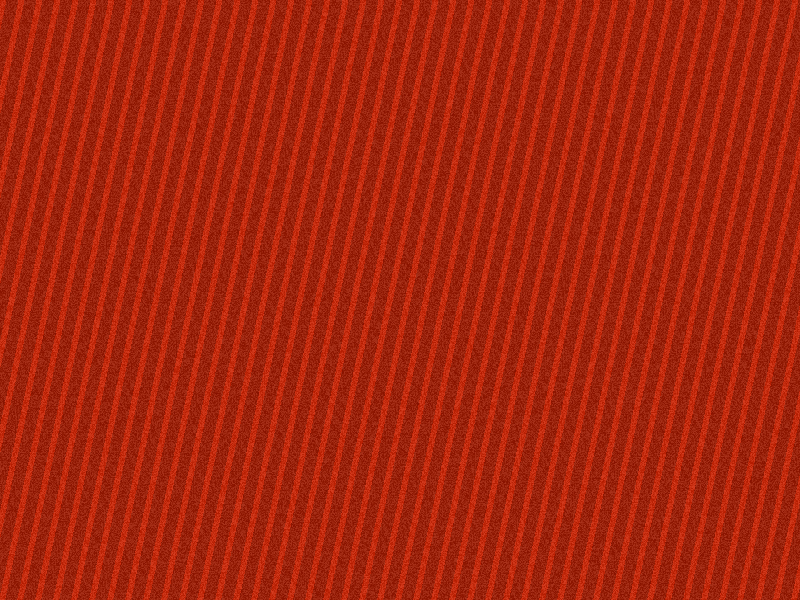
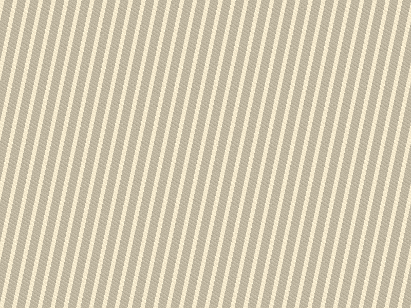
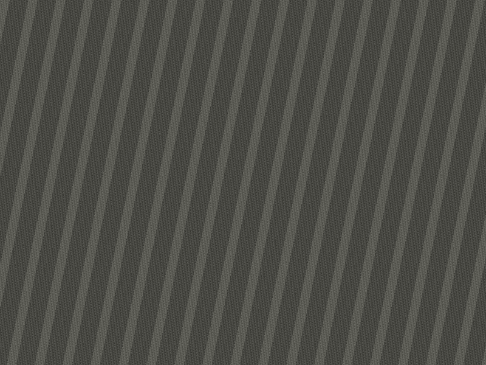
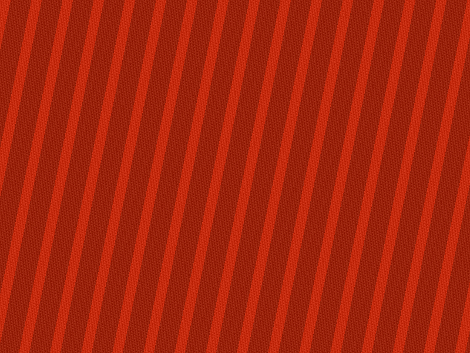

先把话说短
再把它推快
九条标语共用一条 12° 斜线。每条只增加 24px 的横向位移，读起来像一句接一句往外冲。
九条标语共用一条 12° 斜线。每条只增加 24px 的横向位移，读起来像一句接一句往外冲。
一句超过十二个字，斜线就会把它切断；切断的地方读起来像喘气。
四栏、六栏、七栏、九栏。没有第五档，也没有居中的那一档。
行与行之间不留呼吸，让字自己挤在一起形成推挤感。
没有编号也行：从上到下、从左到右，斜线已经替你排好了先后。编号只是给检索用的第二重保险。
硬边 drop-shadow 的模糊半径恒为零；柔和的外投影一个都不许出现。
朱红、纸白、墨黑、压深红、灰墨。多一种就重做。
二、三、六、十三像素。没有一像素的发丝线。
它不能被做成常驻装饰：一旦常驻，整页就从宣言退成了一张活力营销图。



